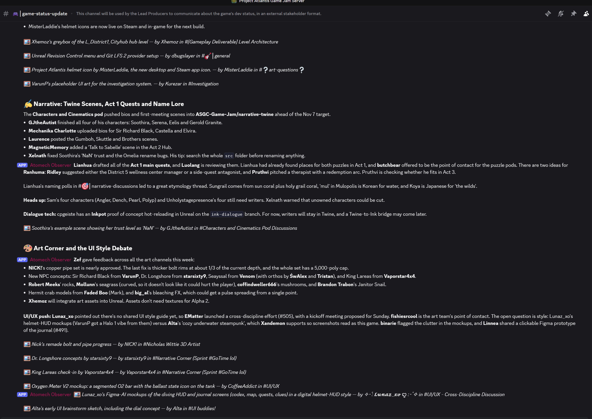
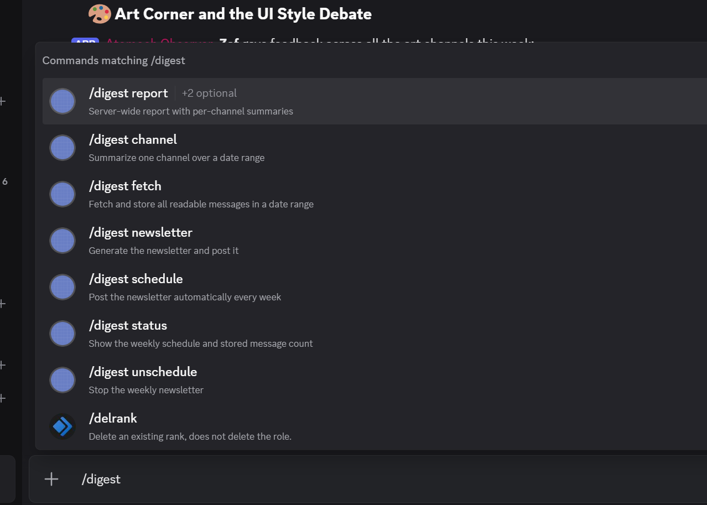

These screenshots show how the Atomech Observer bot uses its privileged intents. See the privacy policy for what it collects and how long it is kept.
The weekly summary the bot posts in a channel.

The slash commands members use to request summaries.
